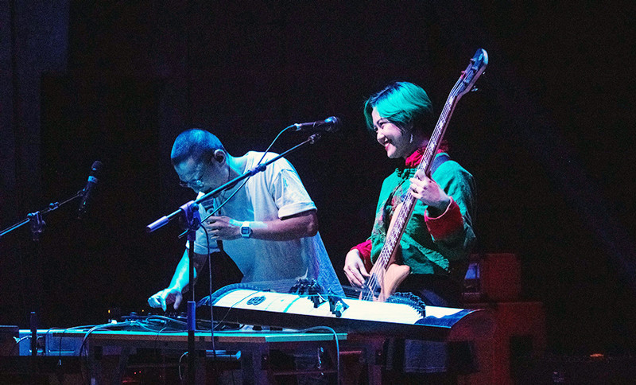
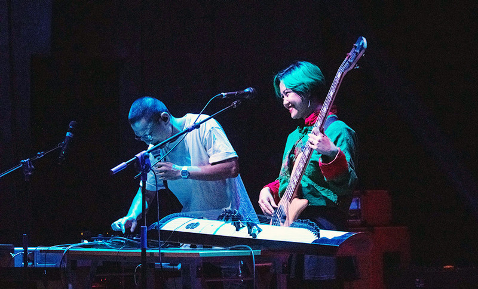
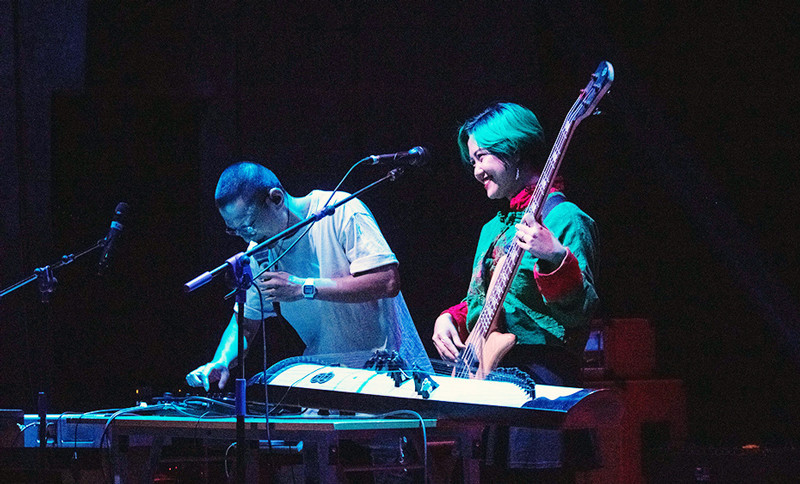

Âm nhạc Việt Nam · Văn hoá · Con người

Nền âm nhạc đa sắc màu
Âm nhạc Việt Nam là một kho tàng phong phú phản ánh lịch sử, văn hoá và đời sống con người. Từ những giai điệu dân gian như quan họ, ca trù, đến cải lương, vọng cổ, mỗi vùng miền đều mang nét đặc trưng riêng. Trong khi đó, nhạc hiện đại như V-pop, nhạc trẻ hay nhạc underground lại hòa trộn âm hưởng phương Tây với tinh thần Việt, tạo nên những giai điệu độc đáo và giàu cảm xúc. Âm nhạc Việt Nam không chỉ là giải trí mà còn là phương tiện lưu giữ ký ức, truyền cảm hứng và kết nối con người qua từng lời ca, nhịp điệu và giai điệu sâu lắng.

Ca sĩ / Singer

Nhạc sĩ / Composer
Producer